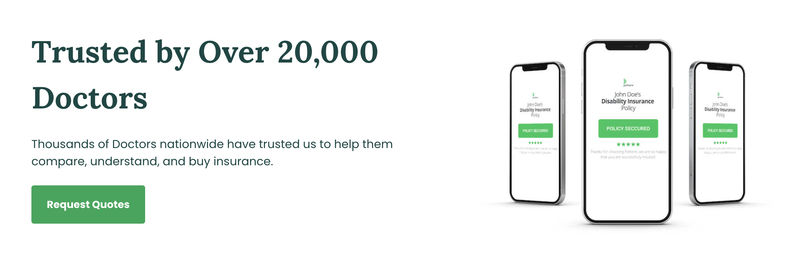
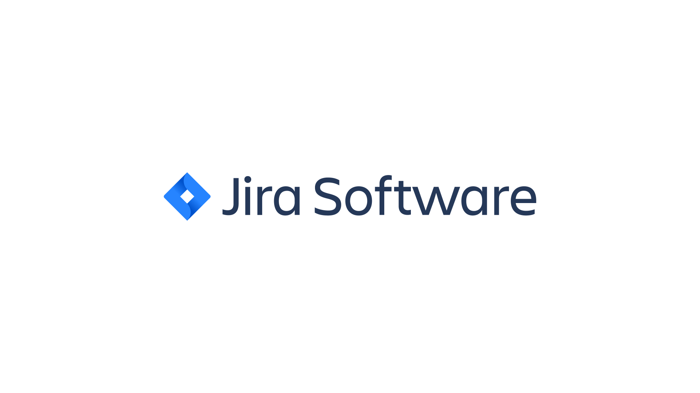
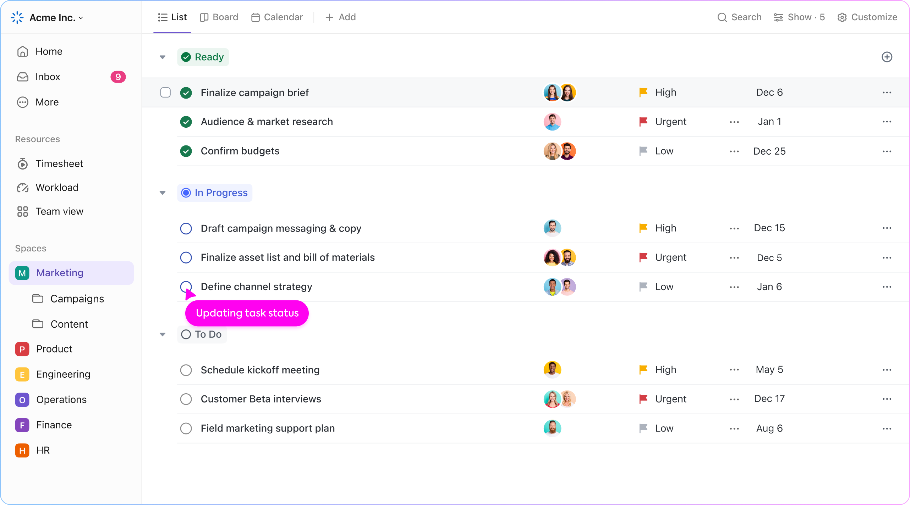

The first internship I had was with Pattern Life, which focused on disability insurance for doctors. My role with them was business analysis as I focused on improving the company workflow and project management.
When Pattern initially brought me on, I was placed under a senior project manager who needed to offload some smaller things that were perfect for an intern.
I started by writing user stories for business units, creating wireframes, and tracking progress with external developers.
Eventually, as I gained more experience, I was able to run sprints, perform backlog grooming, and even retrospectives.
A little over six months through my internship with Pattern, there was a company-wide consensus that, as we grew, it was getting harder and harder to track tasks and projects. Too much work was being lost and even more was being performed off the side of the desk.
In order to mitigate this, I was given the task of building out our current PM software, ClickUp, to be something that the whole company could use.
This meant creating a custom workflow space for each business unit, building dashboards for the leadership team, and monitoring changes/feedback after it was deployed to the team.
